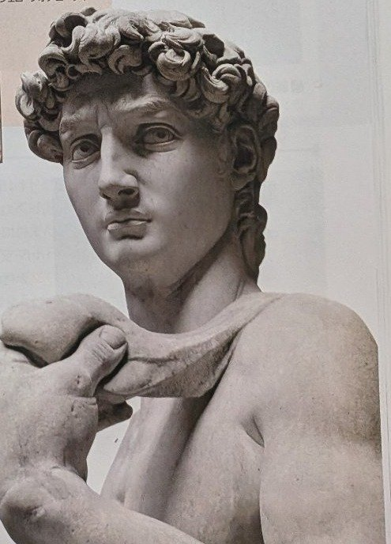
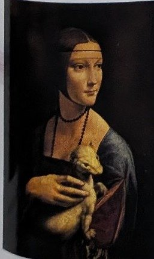
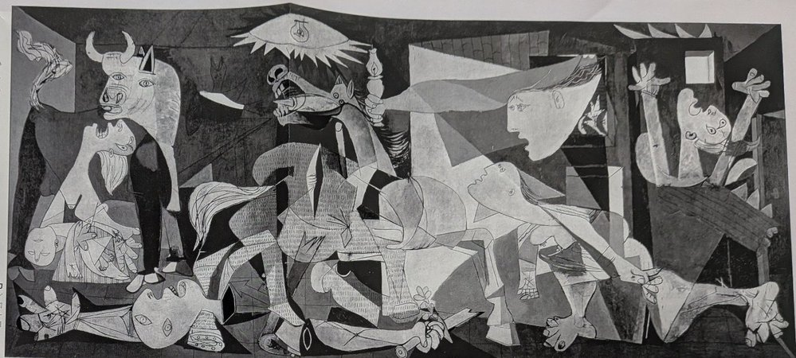

※実際の期末テストと同じ形式で作った模擬テストの第3回です。大問3題・50点満点（筆記20点／実技30点）。目安時間は30分です。範囲は、正式範囲の教科書・資料集の指定ページ／授業プリント（ダ・ヴィンチ／フェルメール）と手のデッサンです。本番のつもりで時間を計って解き、終わったら下の「答えを見る（解答・解説）」で答え合わせをしましょう。間違えたところは「まちがい記録」に残して復習しましょう。
大問1は、本番と同じように、作品の図版（絵）を見て作品名・作者名を答える問題です。実技は手のデッサンです。デッサン用具（鉛筆）を用意して、筆記10分・実技20分を目安に区切って練習しましょう。
※教科書・資料集に載っている言葉で答えること。
※作品名・作者名は、指定があるところでは漢字で正確に書きなさい。漢字の間違いは×になる。
##
次の（1）〜（3）の図版（絵）を見て、作品名と作者名を答えなさい（作者名は教科書・資料集の表記どおりに書くこと）。
（1）

（2）

（3）

次の文の（1）〜（4）に当てはまる語句を答えなさい。
「最後の晩餐」は、イタリアの（1）にある修道院の食堂の壁に描かれた壁画である。奥行きを表す平行な線を1つの消失点へ集める（2）を使うことで、部屋の奥行きと場面の中心が際立つように工夫されている。
ヨハネス・フェルメールの「真珠の耳飾りの少女」では、頭に巻いた布に使われた深い青色が印象的で、この青は（3）と呼ばれる。また、この作品は、その表情の魅力から「北のモナ・リザ」、あるいは（4）と呼ばれることがある。※（4）は（3）とは別の呼び名（国名を含む別名）を答えること。
※（4）の答えは「オランダのモナ・リザ」とする（解答編参照）。「北のモナ・リザ」と二重にならないよう、問題文では国名を含む別名を指定した。
※本番では、当日指定されたポーズで「手」を鉛筆でデッサンする。本稿は家庭での練習課題として、本番と同じ評価ポイントで実施すること。
課題：片手を開いた手と、もう一方の手の指先を軽く添えた手を組み合わせたポーズをモデルにして、デッサン用紙に鉛筆で描きなさい。条件は次のとおりとする。
（練習のたびにチェックすること）
（1）作品名：ダヴィデ／作者名：ミケランジェロ・ブオナローティ
解説：大理石でできた彫刻であること、大きく力強い像の姿が手がかり。ルネサンスの三大巨匠の一人、ミケランジェロの作品。絵画ではなく彫刻である点に注意。
（2）作品名：白貂を抱く婦人／作者名：レオナルド・ダ・ヴィンチ
解説：白貂（オコジョ）を抱く若い女性の肖像が手がかり。手の動きや動物の毛並みまで描き込む、レオナルドの鋭い観察眼が表れた作品。
（3）作品名：ゲルニカ／作者名：パブロ・ピカソ
解説：白黒で描かれた大きな画面、牛と馬、苦しむ人々が手がかり。スペインの町ゲルニカへの無差別爆撃を告発した、ピカソの代表作。
（1）ミラノ 「最後の晩餐」はミラノの修道院の食堂にある壁画。
（2）一点透視図法 奥行きを表す平行な線が1つの消失点に集まる遠近法。消失点とセットで、技法名そのものも覚えておくこと。
（3）フェルメール・ブルー ラピスラズリを原料とする高価な顔料ウルトラマリンによる深い青の呼び名。原料のラピスラズリとあわせて、青色の呼び名も覚えておくこと。
（4）オランダのモナ・リザ 「北のモナ・リザ」と同じく、表情の魅力をモナ・リザにたとえた別名。
まちがえた大問にチェックを入れて「記録する」を押すと、まちがい復習ボックスに残ります。あとで復習ページに出てきます。